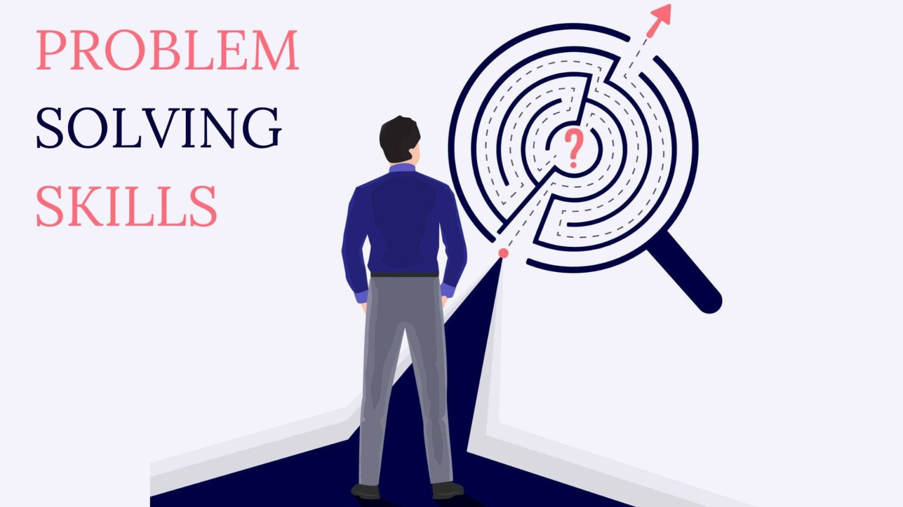

Communication skill
Effective communication skills involve clear expression, active listening, and appropriate body language. They strengthen relationships, promote understanding, and contribute to success in personal and professional interactions, fostering teamwork and mutual respect. Regular practice and feedback enhance communication abilities, benefiting individuals in various aspects of life.
Time management

Time management is the practice of organizing and prioritizing tasks to make the best use of available time. It helps increase productivity, reduce stress, and achieve goals efficiently. By setting realistic schedules and avoiding procrastination, individuals can effectively balance their responsibilities and enjoy a more balanced and fulfilling life.
Problem-solving
Problem-solving is the process of identifying challenges, analyzing possible solutions, and making informed decisions to resolve issues effectively. By thinking critically, being creative, and staying persistent, individuals can overcome obstacles, achieve their objectives, and develop valuable skills for both personal and professional growth.
Decision-making
Decision-making skills involve assessing options, gathering information, and weighing pros and cons to make informed choices. By considering consequences, being confident, and trusting instincts, individuals can make effective decisions in various situations, leading to better outcomes and greater self-assurance in both personal and professional spheres.